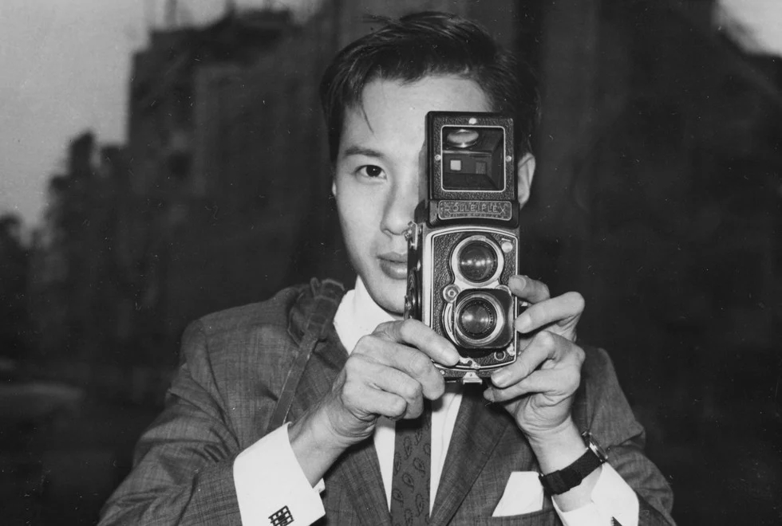
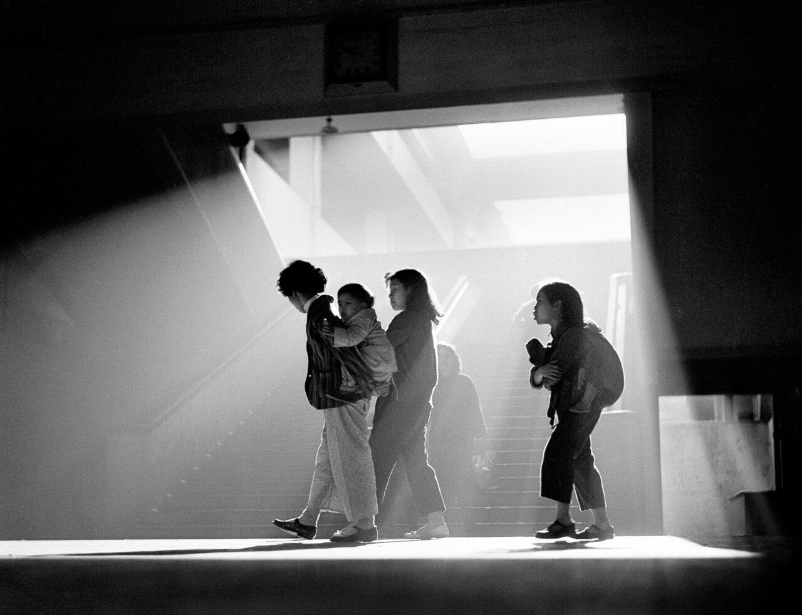
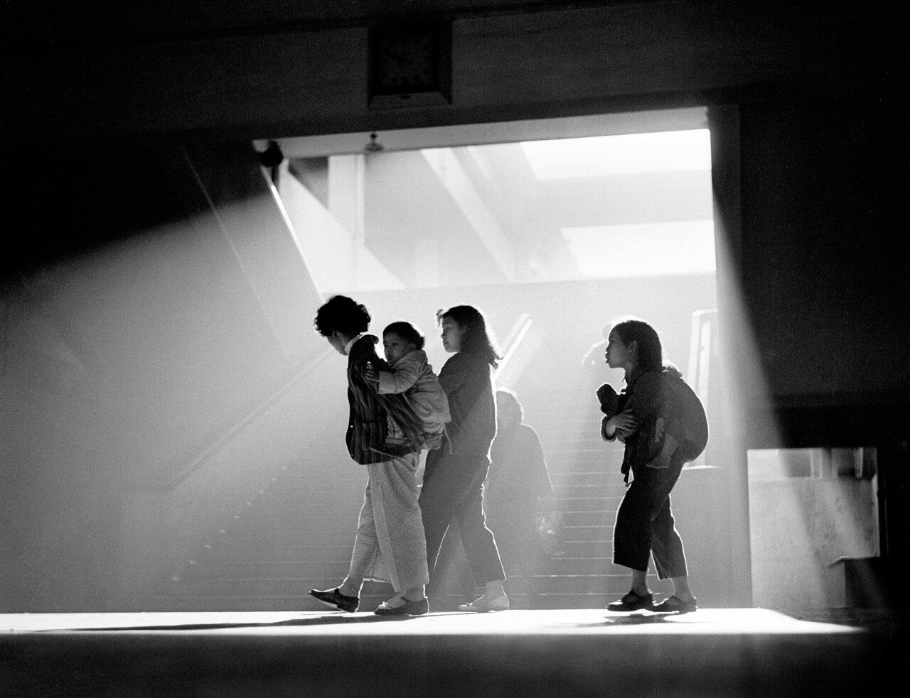

Fan Ho
"I didn't work with any sense of purpose. As an artist, I was only looking to express myself.”
Dubbed the "Cartier-Bresson of the East", Fan Ho patiently waited for 'the decisive moment'; very often a collision of the unexpected, framed against a very clever composed background of geometrical construction, patterns and texture. He often created drama and atmosphere with backlit effects or through the combination of smoke and light. His favorite locations were the streets, alleys and markets around dusk or life on the sea.
What made his work so intensely human is his love for the common Hong Kong people: Coolies, vendors, hawkers selling fruits and vegetables, kids playing in the street or doing their homework, people crossing the street
He never intended to create a historic record of the city's buildings and monuments; rather he aimed to capture the soul of Hong Kong, the hardship and resilience of its citizens.During his long career he has taught photography and film making at a dozen universities worldwide. His work is in many private and public collection of which most notable are: M+ Museum, Hong Kong, Heritage Museum, Hong Kong, Bibliothèque National de France, Paris, France, San Francisco Museum of Modern Art, USA, Santa Barbara Museum of Art, USA and many more.
 
